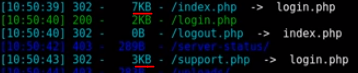

An example from Bank.htb
Going to bank.htb/index.php, you can notice that the page responds with a 301 redirect to the Location: login.php
Using dirsearch or other directory brute force tool, you may notice that some pages are redirecting (whether it is a 301 redirect or a 302 found). Additionally, these pages are passing data along with them! Typically, redirects are ONLY that. An empty redirect page to direct the user automatically, so if the page is not empty, that is an indicator of something 'more'.

In Burp you can intercept server responses as well
Say you went to a page and it wanted to redirect you (301/2) to another page (specified in the Location: header). You can intercept the redirect response from the server, replace with a 200 OK and may receive unintended information.
Can also add a "match and replace" in Burp. Say match any 302 (found) or 301 (redirect) responses with 200 ok in order to automatically process our bypass.
Or maybe try to have it redirect you to various places in the application that you know about.